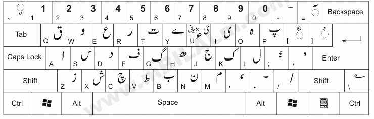

About Typing Master Keyboard and Paragraphs
Normal Keyboard
Keyboard with Shift

|
تعلیم کی اہمیت اور اس کے معاشرتی اثراتParagraph(1)
556 الفاظ
تعلیم کسی بھی قوم کی ترقی اور خوشحالی کی بنیاد ہوتی ہے۔ یہ نہ صرف افراد کی ذہنی اور فکری صلاحیتوں کو پروان چڑھاتی ہے بلکہ معاشرتی سطح پر بھی گہرے اور مثبت اثرات مرتب کرتی ہے۔ ایک تعلیم یافتہ معاشرہ جہالت، غربت اور پسماندگی سے نجات حاصل کرتا ہے۔ تعلیم انسان کو شعور، آگاہی اور خود اعتمادی عطا کرتی ہے، جس سے وہ زندگی کے ہر شعبے میں بہتر فیصلے کرنے کے قابل ہوتا ہے۔ پاکستان جیسے ترقی پذیر ملک میں تعلیم کی اہمیت اور بھی بڑھ جاتی ہے جہاں آبادی کا ایک بڑا حصہ ابھی تک بنیادی تعلیمی سہولیات سے محروم ہے۔ تعلیم کے فروغ سے ہی ہم اپنے ملک کو ترقی یافتہ ممالک کی صف میں شامل کر سکتے ہیں۔ حکومت کو چاہیے کہ وہ تعلیم کے شعبے میں مزید سرمایہ کاری کرے، نئے اسکول اور کالج قائم کرے، اور اساتذہ کی تربیت پر خصوصی توجہ دے۔ نصاب کو جدید تقاضوں کے مطابق ڈھالنا بھی ضروری ہے تاکہ طلباء کو عملی زندگی میں کامیابی کے لیے درکار مہارتیں حاصل ہو سکیں۔ تعلیم کے بغیر کوئی بھی قوم ترقی نہیں کر سکتی۔ یہ ایک ایسی طاقت ہے جو انسان کو تاریکی سے روشنی کی طرف لاتی ہے۔ تعلیم کے ذریعے ہی ہم اپنے معاشرے سے جہالت، تعصب اور تنگ نظری کا خاتمہ کر سکتے ہیں۔ تعلیم یافتہ افراد ہی ملک کی معیشت کو مضبوط بنا سکتے ہیں اور نئے افکار و نظریات کو فروغ دے سکتے ہیں۔ تعلیم صرف کتابی علم کا نام نہیں بلکہ یہ انسان کو اخلاقی اقدار، سماجی ذمہ داریوں اور انسانیت کی خدمت کا درس بھی دیتی ہے۔ والدین کو چاہیے کہ وہ اپنے بچوں کو تعلیم دلانے میں کوئی کسر نہ چھوڑیں، چاہے اس کے لیے انہیں کتنی ہی قربانیاں کیوں نہ دینی پڑیں۔ ایک تعلیم یافتہ نسل ہی ملک کا روشن مستقبل ہے۔ تعلیم کے بغیر ہم دنیا کے ترقی یافتہ ممالک کا مقابلہ نہیں کر سکتے۔ یہ وقت کی اہم ضرورت ہے کہ ہم تعلیم کو اپنی اولین ترجیح بنائیں۔ ہمیں یہ سمجھنا ہوگا کہ تعلیم صرف نوکری حاصل کرنے کا ذریعہ نہیں بلکہ یہ ایک مکمل شخصیت کی تعمیر کا عمل ہے۔ یہ انسان کو سوچنے، سمجھنے اور تجزیہ کرنے کی صلاحیت دیتی ہے۔ تعلیم کے ذریعے ہی ہم اپنے ملک میں امن، بھائی چارے اور رواداری کو فروغ دے سکتے ہیں۔ تعلیم ہی وہ واحد راستہ ہے جو ہمیں جہالت کے اندھیروں سے نکال کر علم کی روشنی میں لاتا ہے۔ ہمیں اپنے تعلیمی نظام میں اصلاحات لانے کی ضرورت ہے تاکہ یہ جدید دنیا کے تقاضوں کو پورا کر سکے۔ تعلیم ہر فرد کا بنیادی حق ہے اور حکومت کی ذمہ داری ہے کہ وہ ہر شہری کو یہ حق فراہم کرے۔ ہمیں تعلیم کو ایک سرمایہ کاری سمجھنا چاہیے جو مستقبل میں بہترین نتائج دے گی۔ تعلیم کے بغیر کوئی قوم ترقی نہیں کر سکتی اور نہ ہی عالمی سطح پر اپنا مقام بنا سکتی ہے۔ تعلیم ہی وہ ستون ہے جس پر کسی بھی قوم کی عظمت کی عمارت کھڑی ہوتی ہے۔ اس لیے ہمیں تعلیم کے فروغ کے لیے ہر ممکن کوشش کرنی چاہیے۔ تعلیم کی روشنی سے ہی ہم اپنے معاشرے کو روشن کر سکتے ہیں اور ایک بہتر مستقبل کی بنیاد رکھ سکتے ہیں۔ تعلیم کے بغیر ہم اپنے خوابوں کو شرمندہ تعبیر نہیں کر سکتے۔ یہ ایک مسلسل عمل ہے جو زندگی بھر جاری رہتا ہے۔ تعلیم انسان کو خود مختار بناتی ہے اور اسے اپنے حقوق و فرائض سے آگاہ کرتی ہے۔ ہمیں تعلیم کو صرف اسکول اور کالج تک محدود نہیں رکھنا چاہیے بلکہ اسے زندگی کے ہر شعبے میں شامل کرنا چاہیے۔ تعلیم کے ذریعے ہی ہم اپنے معاشرے کو ایک مثالی معاشرہ بنا سکتے ہیں۔ تعلیم کے بغیر ہم کسی بھی چیلنج کا مقابلہ نہیں کر سکتے۔ یہ ایک ایسا ہتھیار ہے جو ہمیں ہر مشکل سے لڑنے کی طاقت دیتا ہے۔ تعلیم کے بغیر ہم اپنے ملک کو ترقی کی راہ پر گامزن نہیں کر سکتے۔ یہ ایک ایسا راستہ ہے جو ہمیں کامیابی کی منزل تک پہنچاتا ہے۔ ہمیں تعلیم کے فروغ کے لیے اجتماعی کوششیں کرنی ہوں گی۔
|
|
ماحولیاتی آلودگی اور اس کے انسانی صحت پر اثراتParagraph(2)
558 الفاظ
ماحولیاتی آلودگی عصر حاضر کا ایک سنگین مسئلہ ہے جس نے عالمی سطح پر انسانیت کو اپنی لپیٹ میں لے رکھا ہے۔ یہ آلودگی نہ صرف فطری ماحول کو تباہ کر رہی ہے بلکہ انسانی صحت پر بھی انتہائی مضر اثرات مرتب کر رہی ہے۔ فضائی آلودگی، آبی آلودگی، زمینی آلودگی اور صوتی آلودگی اس کی چند اہم اقسام ہیں۔ صنعتی ترقی، بڑھتی ہوئی آبادی، شہری کاری اور جنگلات کی بے تحاشا کٹائی اس آلودگی کی بنیادی وجوہات ہیں۔ فیکٹریوں سے نکلنے والا دھواں، گاڑیوں کا اخراج، کیمیائی مادوں کا بے دریغ استعمال اور کوڑے کرکٹ کا غیر مناسب انتظام ماحول کو زہر آلود کر رہا ہے۔ فضائی آلودگی سانس کی بیماریوں جیسے دمہ، برونکائٹس اور پھیپھڑوں کے کینسر کا سبب بن رہی ہے۔ آبی آلودگی پینے کے صاف پانی کی قلت پیدا کر رہی ہے اور ہیضہ، ٹائیفائیڈ اور دیگر آبی امراض کا باعث بن رہی ہے۔ زمینی آلودگی زرعی زمینوں کو بنجر بنا رہی ہے اور غذائی قلت کا خطرہ بڑھا رہی ہے۔ صوتی آلودگی ذہنی دباؤ، نیند کی کمی اور سماعت کے مسائل پیدا کر رہی ہے۔ ماحولیاتی آلودگی کے نتیجے میں عالمی درجہ حرارت میں اضافہ ہو رہا ہے، جس سے گلیشیر پگھل رہے ہیں اور سمندروں کی سطح بلند ہو رہی ہے۔ یہ صورتحال ساحلی علاقوں کے لیے ایک بڑا خطرہ ہے اور قدرتی آفات جیسے سیلاب اور طوفانوں میں اضافہ کر رہی ہے۔ ہمیں اس سنگین مسئلے سے نمٹنے کے لیے فوری اور مؤثر اقدامات کرنے کی ضرورت ہے۔ حکومتوں کو چاہیے کہ وہ سخت ماحولیاتی قوانین نافذ کریں اور ان پر سختی سے عمل درآمد کروائیں۔ صنعتوں کو آلودگی پر قابو پانے کے لیے جدید ٹیکنالوجی استعمال کرنے پر مجبور کیا جائے۔ درخت لگانا، جنگلات کا تحفظ کرنا اور قابل تجدید توانائی کے ذرائع کو فروغ دینا بھی ضروری ہے۔ عوام میں ماحولیاتی تحفظ کے بارے میں شعور بیدار کرنا بھی انتہائی اہم ہے۔ ہمیں اپنے روزمرہ کے معمولات میں بھی تبدیلیاں لانی ہوں گی، جیسے کم سے کم پلاسٹک کا استعمال، کوڑے کو صحیح طریقے سے ٹھکانے لگانا اور پبلک ٹرانسپورٹ کا زیادہ استعمال کرنا۔ اگر ہم نے اس مسئلے پر قابو نہ پایا تو ہماری آنے والی نسلوں کو ایک تباہ شدہ اور آلودہ ماحول کا سامنا کرنا پڑے گا۔ ماحولیاتی آلودگی صرف ایک ملک کا مسئلہ نہیں بلکہ یہ ایک عالمی مسئلہ ہے جس کے لیے عالمی سطح پر تعاون کی ضرورت ہے۔ ہمیں سب کو مل کر اس چیلنج کا مقابلہ کرنا ہوگا۔ ماحولیاتی آلودگی کے اثرات صرف انسانوں تک محدود نہیں بلکہ یہ جانوروں اور پودوں کی زندگی کو بھی متاثر کر رہی ہے۔ بہت سی نایاب نسلیں ماحولیاتی تبدیلیوں کی وجہ سے ناپید ہو رہی ہیں۔ ہمیں اپنے سیارے کو بچانے کے لیے فوری اقدامات کرنے ہوں گے۔ یہ ہماری اخلاقی ذمہ داری ہے کہ ہم اپنی زمین کو صاف ستھرا اور صحت مند بنائیں۔ ماحولیاتی آلودگی کے خلاف جنگ میں ہر فرد کو اپنا کردار ادا کرنا ہوگا۔ یہ ایک ایسا مسئلہ ہے جس کا حل صرف اجتماعی کوششوں سے ہی ممکن ہے۔ ہمیں اپنے طرز زندگی میں تبدیلی لانی ہوگی اور ماحول دوست عادات کو اپنانا ہوگا۔ ماحولیاتی آلودگی سے نمٹنا ہمارے مستقبل کی بقا کے لیے ناگزیر ہے۔ یہ ایک ایسا چیلنج ہے جس کا سامنا ہمیں آج ہی کرنا ہوگا۔ ہمیں ماحولیاتی تحفظ کو اپنی ترجیحات میں شامل کرنا ہوگا۔
|
|
ٹیکنالوجی کا انسانی زندگی پر اثر اور اس کے مثبت و منفی پہلوParagraph(3)
551 الفاظ
جدید ٹیکنالوجی نے انسانی زندگی کے ہر شعبے میں انقلاب برپا کر دیا ہے۔ آج ہم جس دور میں جی رہے ہیں، وہ ٹیکنالوجی کا دور ہے جہاں ہر کام میں ٹیکنالوجی کا عمل دخل نظر آتا ہے۔ مواصلات سے لے کر صحت تک، تعلیم سے لے کر کاروبار تک، ہر شعبے میں ٹیکنالوجی نے حیرت انگیز تبدیلیاں لائی ہیں۔ انٹرنیٹ، موبائل فون، کمپیوٹر اور مصنوعی ذہانت جیسی ایجادات نے دنیا کو ایک گلوبل ولیج بنا دیا ہے۔ ٹیکنالوجی کے مثبت پہلوؤں میں سب سے اہم معلومات تک آسان رسائی ہے۔ آج ہم ایک کلک پر دنیا بھر کی معلومات حاصل کر سکتے ہیں۔ تعلیم کے شعبے میں آن لائن کورسز اور ای-لرننگ نے علم کے حصول کو آسان بنا دیا ہے۔ صحت کے شعبے میں جدید طبی آلات اور طریقہ علاج نے بیماریوں کا مقابلہ کرنے میں مدد دی ہے۔ کاروبار میں ای-کامرس اور ڈیجیٹل مارکیٹنگ نے نئے مواقع پیدا کیے ہیں۔ مواصلات میں سوشل میڈیا اور ویڈیو کالنگ نے لوگوں کو ایک دوسرے کے قریب کر دیا ہے۔ ٹیکنالوجی نے ہماری زندگی کو آسان، تیز رفتار اور مؤثر بنا دیا ہے۔ تاہم، ٹیکنالوجی کے کچھ منفی پہلو بھی ہیں جنہیں نظر انداز نہیں کیا جا سکتا۔ ٹیکنالوجی کے زیادہ استعمال سے انسانی تعلقات میں کمی آ رہی ہے اور لوگ تنہائی کا شکار ہو رہے ہیں۔ سوشل میڈیا کا بے جا استعمال ذہنی صحت کے مسائل جیسے ڈپریشن اور اضطراب کا باعث بن رہا ہے۔ سائبر کرائم، ڈیٹا کی چوری اور پرائیویسی کے مسائل بھی ٹیکنالوجی کے منفی اثرات میں شامل ہیں۔ ملازمتوں میں کمی کا خطرہ بھی ایک اہم تشویش ہے، کیونکہ بہت سے کام اب مشینوں کے ذریعے انجام دیے جا رہے ہیں۔ بچوں پر ٹیکنالوجی کے منفی اثرات بھی نمایاں ہیں، جیسے اسکرین کا زیادہ استعمال ان کی جسمانی اور ذہنی نشوونما کو متاثر کر رہا ہے۔ ہمیں ٹیکنالوجی کا استعمال احتیاط اور ذمہ داری کے ساتھ کرنا چاہیے تاکہ اس کے منفی اثرات سے بچا جا سکے۔ والدین کو چاہیے کہ وہ اپنے بچوں کو ٹیکنالوجی کے صحیح استعمال کے بارے میں آگاہ کریں اور انہیں اسکرین کے وقت کو محدود کرنے کی ترغیب دیں۔ حکومتوں کو چاہیے کہ وہ سائبر سیکیورٹی کے قوانین کو مضبوط کریں اور لوگوں کو آن لائن فراڈ سے بچانے کے لیے اقدامات کریں۔ ٹیکنالوجی ایک دو دھاری تلوار ہے جس کا صحیح استعمال ہمیں ترقی کی راہ پر گامزن کر سکتا ہے اور غلط استعمال ہمیں تباہی کی طرف لے جا سکتا ہے۔ ہمیں ٹیکنالوجی کو اپنا آقا نہیں بلکہ اپنا خادم بنانا چاہیے۔ یہ ہماری ذمہ داری ہے کہ ہم ٹیکنالوجی کا مثبت استعمال کریں اور اس کے منفی اثرات سے بچیں۔ ٹیکنالوجی نے جہاں ایک طرف انسانی زندگی کو آسان بنایا ہے وہیں دوسری طرف اس نے نئے چیلنجز بھی پیدا کیے ہیں۔ ہمیں ان چیلنجز کا مقابلہ کرنے کے لیے تیار رہنا چاہیے۔ ٹیکنالوجی کے بغیر آج کی دنیا کا تصور بھی محال ہے۔ یہ ہماری زندگی کا ایک لازمی حصہ بن چکی ہے۔ ہمیں اس کا استعمال دانشمندی سے کرنا چاہیے۔ ٹیکنالوجی نے دنیا کو بدل دیا ہے اور یہ تبدیلی کا عمل مسلسل جاری ہے۔ ہمیں اس تبدیلی کے ساتھ ہم آہنگ ہونا ہوگا۔ ٹیکنالوجی کے ذریعے ہم اپنے مسائل کا حل تلاش کر سکتے ہیں اور ایک بہتر مستقبل کی بنیاد رکھ سکتے ہیں۔
|
|
سیاحت کی اہمیت اور پاکستان میں اس کی ترقی کے امکاناتParagraph(4)
550 الفاظ
سیاحت کسی بھی ملک کی معیشت کے لیے ریڑھ کی ہڈی کی حیثیت رکھتی ہے۔ یہ نہ صرف غیر ملکی زرمبادلہ کمانے کا ایک اہم ذریعہ ہے بلکہ یہ روزگار کے نئے مواقع بھی پیدا کرتی ہے اور مقامی ثقافتوں کو فروغ دیتی ہے۔ پاکستان ایک ایسا ملک ہے جو قدرتی خوبصورتی، تاریخی مقامات اور متنوع ثقافتوں سے مالا مال ہے۔ یہاں دنیا کے بلند ترین پہاڑی سلسلے، سرسبز و شاداب وادیاں، صحرا، ساحل سمندر اور قدیم تہذیبوں کے آثار موجود ہیں۔ شمالی علاقہ جات میں گلگت بلتستان، ہنزہ، سوات، کاغان اور ناران جیسے مقامات اپنی دلکش خوبصورتی کی وجہ سے دنیا بھر کے سیاحوں کو اپنی طرف متوجہ کرتے ہیں۔ یہ علاقے برف پوش چوٹیوں، گہرے جنگلات، شفاف جھیلوں اور بہتے چشموں کا مسکن ہیں۔ تاریخی مقامات میں لاہور کا شاہی قلعہ، بادشاہی مسجد، شالیمار باغ، ٹیکسلا کے بدھ مت کے آثار اور موہنجو داڑو کی قدیم تہذیب کے کھنڈرات سیاحوں کے لیے خاص کشش رکھتے ہیں۔ صوبہ سندھ میں ٹھٹھہ کی مکلی کا قبرستان اور شاہ جہاں مسجد بھی اپنی تاریخی اہمیت کی وجہ سے مشہور ہیں۔ بلوچستان کے ساحلی علاقے اور صحرائے تھر کی منفرد ثقافت بھی سیاحوں کے لیے دلچسپی کا باعث ہے۔ پاکستان میں سیاحت کی ترقی کے بے پناہ امکانات موجود ہیں۔ حکومت کو چاہیے کہ وہ سیاحتی مقامات پر بنیادی ڈھانچے کو بہتر بنائے، سڑکوں کی تعمیر کرے، ہوٹلوں اور گیسٹ ہاؤسز کی سہولیات فراہم کرے اور سیاحوں کی حفاظت کو یقینی بنائے۔ ویزا پالیسی کو آسان بنانا اور بین الاقوامی پروازوں کی تعداد میں اضافہ کرنا بھی ضروری ہے۔ سیاحت کے فروغ کے لیے عالمی سطح پر پاکستان کی مثبت شبیہ کو اجاگر کرنا بھی اہم ہے۔ سوشل میڈیا اور بین الاقوامی ٹریول ایجنسیوں کے ذریعے پاکستان کے سیاحتی مقامات کی تشہیر کی جانی چاہیے۔ مقامی آبادی کو سیاحت کے فوائد کے بارے میں آگاہ کرنا اور انہیں سیاحوں کے ساتھ دوستانہ رویہ اختیار کرنے کی ترغیب دینا بھی ضروری ہے۔ سیاحت کی ترقی سے نہ صرف مقامی لوگوں کو روزگار ملے گا بلکہ ان کی معاشی حالت بھی بہتر ہوگی۔ یہ ملک کی ثقافت اور روایات کو بھی دنیا بھر میں متعارف کرائے گا۔ پاکستان میں سیاحت کا شعبہ غیر استعمال شدہ صلاحیتوں سے بھرا پڑا ہے۔ اگر اس شعبے پر مناسب توجہ دی جائے تو یہ ملک کی معیشت میں ایک اہم کردار ادا کر سکتا ہے۔ سیاحت کے ذریعے ہم دنیا کو پاکستان کا حقیقی چہرہ دکھا سکتے ہیں، جو امن، خوبصورتی اور مہمان نوازی کا عکاس ہے۔ ہمیں سیاحوں کو بہترین سہولیات فراہم کرنی ہوں گی تاکہ وہ پاکستان سے اچھے تاثرات لے کر واپس جائیں اور دوسروں کو بھی یہاں آنے کی ترغیب دیں۔ سیاحت کے فروغ سے نہ صرف معیشت مضبوط ہوگی بلکہ بین الاقوامی سطح پر پاکستان کے تعلقات بھی بہتر ہوں گے۔ یہ ایک ایسا شعبہ ہے جو ملک کی ترقی میں کلیدی کردار ادا کر سکتا ہے۔
|
|
کتابوں کی اہمیت اور مطالعہ کی عادت کو فروغ دیناParagraph(5)
552 الفاظ
کتابیں انسانیت کی سب سے بہترین دوست اور علم کا لازوال خزانہ ہیں۔ یہ ہمیں ماضی سے جوڑتی ہیں، حال کو سمجھنے میں مدد دیتی ہیں اور مستقبل کے لیے رہنمائی فراہم کرتی ہیں۔ کتابوں کے مطالعے سے نہ صرف ہمارے علم میں اضافہ ہوتا ہے بلکہ یہ ہماری سوچ کو وسعت دیتی ہیں، تخیل کو پروان چڑھاتی ہیں اور ہمیں نئے خیالات سے روشناس کراتی ہیں۔ ایک اچھی کتاب انسان کو تنہائی میں بھی بہترین رفیق فراہم کرتی ہے اور اسے کبھی بور نہیں ہونے دیتی۔ آج کے ڈیجیٹل دور میں جہاں انٹرنیٹ اور سوشل میڈیا کا راج ہے، کتابوں کی اہمیت کسی بھی صورت کم نہیں ہوئی ہے۔ بلکہ، ان کی اہمیت اور بھی بڑھ گئی ہے کیونکہ یہ ہمیں سطحی معلومات کے بجائے گہرائی اور بصیرت فراہم کرتی ہے۔ مطالعہ کی عادت انسان کو ذہنی طور پر مضبوط بناتی ہے، اس کی توجہ اور ارتکاز کو بہتر بناتی ہے اور اسے تنقیدی سوچ کی صلاحیت عطا کرتی ہے۔ یہ انسان کو مختلف ثقافتوں، نظریات اور زندگی کے پہلوؤں سے آگاہ کرتی ہے، جس سے اس کی شخصیت میں نکھار آتا ہے۔ کتابیں ہمیں بڑے بڑے مفکرین، فلسفیوں اور سائنسدانوں کے خیالات سے روشناس کراتی ہیں اور ہمیں ان کے تجربات سے سیکھنے کا موقع فراہم کرتی ہیں۔ بچوں میں مطالعہ کی عادت کو فروغ دینا انتہائی ضروری ہے۔ والدین کو چاہیے کہ وہ اپنے بچوں کو چھوٹی عمر سے ہی کتابوں سے دوستی کرائیں، انہیں کہانیاں سنائیں اور انہیں لائبریری لے جائیں۔ اسکولوں میں بھی مطالعہ کو فروغ دینے کے لیے مختلف سرگرمیاں منعقد کی جانی چاہئیں، جیسے بک کلبز اور ریڈنگ کمپینز۔ حکومت اور تعلیمی اداروں کو چاہیے کہ وہ لائبریریوں کو جدید بنائیں اور کتابوں کو عوام تک آسان رسائی فراہم کریں۔ کتابیں صرف معلومات کا ذریعہ نہیں بلکہ یہ ہماری روح کی غذا بھی ہیں۔ یہ ہمیں سکون، تسلی اور خوشی فراہم کرتی ہیں۔ مطالعہ کی عادت انسان کو ایک بہتر انسان بناتی ہے اور اسے زندگی کے چیلنجز کا مقابلہ کرنے کی طاقت دیتی ہے۔ ہمیں اپنے روزمرہ کے معمولات میں مطالعہ کے لیے وقت نکالنا چاہیے، چاہے وہ صرف چند منٹ ہی کیوں نہ ہوں۔ ایک اچھی کتاب زندگی بدلنے کی صلاحیت رکھتی ہے۔ یہ ہمیں نئے راستے دکھاتی ہے اور ہمیں اپنے مقاصد حاصل کرنے میں مدد دیتی ہے۔ کتابیں ہمیں دنیا کو ایک نئے زاویے سے دیکھنے کا موقع فراہم کرتی ہیں۔ یہ ہمیں ماضی کی غلطیوں سے سیکھنے اور مستقبل کو بہتر بنانے میں مدد دیتی ہے۔ کتابیں ہمیں تنہائی میں بھی بہترین رفیق فراہم کرتی ہیں اور ہمیں کبھی اکیلا محسوس نہیں ہونے دیتی۔ مطالعہ کی عادت انسان کو ذہنی طور پر چست اور فعال رکھتی ہے۔ یہ اسے نئے خیالات اور نظریات سے روشناس کراتی ہے۔ کتابیں ہمیں زندگی کے مختلف پہلوؤں کو سمجھنے میں مدد دیتی ہیں۔ یہ ہمیں دوسروں کے تجربات سے سیکھنے کا موقع فراہم کرتی ہے۔ کتابیں ہمیں اخلاقی اقدار اور انسانیت کا درس دیتی ہیں۔ یہ ہمیں ایک بہتر انسان بننے میں مدد دیتی ہے۔ مطالعہ کی عادت انسان کو خود مختار بناتی ہے اور اسے اپنے فیصلے خود کرنے کی صلاحیت دیتی ہے۔ یہ ہمیں دنیا کے بارے میں گہرا علم فراہم کرتی ہے۔ کتابیں ہمیں زندگی کے ہر موڑ پر رہنمائی فراہم کرتی ہیں۔ یہ ہمیں کامیابی کی راہ پر گامزن کرتی ہیں۔
|
|
کھیلوں کی اہمیت اور صحت مند طرز زندگیParagraph(6)
550 الفاظ
کھیل انسانی زندگی کا ایک لازمی حصہ ہیں اور صحت مند طرز زندگی کے لیے انتہائی اہمیت کے حامل ہیں۔ یہ نہ صرف جسمانی صحت کو بہتر بناتے ہیں بلکہ ذہنی اور جذباتی صحت پر بھی مثبت اثرات مرتب کرتے ہیں۔ باقاعدگی سے کھیل کود میں حصہ لینے سے انسان کئی بیماریوں سے محفوظ رہتا ہے، جیسے دل کی بیماریاں، ذیابیطس، موٹاپا اور ہائی بلڈ پریشر۔ کھیل جسم کو مضبوط بناتے ہیں، قوت مدافعت میں اضافہ کرتے ہیں اور توانائی کی سطح کو بلند کرتے ہیں۔ اس کے علاوہ، کھیل ذہنی دباؤ کو کم کرنے، موڈ کو بہتر بنانے اور نیند کے معیار کو بہتر بنانے میں بھی مدد دیتے ہیں۔ کھیل صرف جسمانی مشق کا نام نہیں بلکہ یہ سماجی مہارتوں کو بھی پروان چڑھاتے ہیں۔ ٹیم ورک، تعاون، قیادت اور نظم و ضبط جیسی خصوصیات کھیلوں کے ذریعے سیکھی جاتی ہیں۔ یہ بچوں میں خود اعتمادی پیدا کرتے ہیں اور انہیں ہار جیت کو قبول کرنے کا حوصلہ دیتے ہیں۔ کھیل ہمیں چیلنجز کا مقابلہ کرنے اور کامیابی حاصل کرنے کا جذبہ دیتے ہیں۔ پاکستان میں کرکٹ سب سے مقبول کھیل ہے، لیکن فٹ بال، ہاکی، اسکواش اور بیڈمنٹن جیسے دیگر کھیلوں کو بھی فروغ دینے کی ضرورت ہے۔ حکومت کو چاہیے کہ وہ کھیلوں کے میدانوں اور سہولیات کو بہتر بنائے، نوجوانوں کو کھیلوں میں حصہ لینے کی ترغیب دے اور کھیلوں کے ٹیلنٹ کو نکھارنے کے لیے اکیڈمیاں قائم کرے۔ اسکولوں میں کھیلوں کو نصاب کا حصہ بنانا چاہیے اور طلباء کو باقاعدگی سے جسمانی سرگرمیوں میں شامل کرنا چاہیے۔ والدین کو بھی چاہیے کہ وہ اپنے بچوں کو کھیلوں میں حصہ لینے کی ترغیب دیں اور انہیں صحت مند طرز زندگی اپنانے میں مدد دیں۔ کھیلوں کی اہمیت کو نظر انداز نہیں کیا جا سکتا۔ یہ ایک صحت مند اور فعال معاشرے کی بنیاد ہیں۔ کھیل ہمیں زندگی میں نظم و ضبط سکھاتے ہیں اور ہمیں چیلنجز کا مقابلہ کرنے کی ہمت دیتے ہیں۔ یہ ہمیں ہار جیت کو قبول کرنے کا حوصلہ دیتے ہیں اور ہمیں کامیابی کے لیے جدوجہد کرنے کی ترغیب دیتے ہیں۔ کھیل ہمیں ایک دوسرے کے ساتھ تعاون کرنا سکھاتے ہیں اور ہمیں ٹیم ورک کی اہمیت سے آگاہ کرتے ہیں۔ کھیل ہمیں ذہنی دباؤ سے نجات دلاتے ہیں اور ہمیں خوشگوار موڈ میں رکھتے ہیں۔ کھیل ہمیں صحت مند رہنے میں مدد دیتے ہیں اور ہمیں بیماریوں سے بچاتے ہیں۔ کھیل ہمیں ایک فعال اور متحرک زندگی گزارنے میں مدد دیتے ہیں۔ کھیل ہمیں ایک بہتر انسان بناتے ہیں اور ہمیں زندگی کے ہر شعبے میں کامیابی حاصل کرنے میں مدد دیتے ہیں۔ کھیل ہمیں خود اعتمادی پیدا کرتے ہیں اور ہمیں اپنی صلاحیتوں پر یقین کرنے کی ترغیب دیتے ہیں۔ کھیل ہمیں نظم و ضبط سکھاتے ہیں اور ہمیں وقت کی پابندی کرنا سکھاتے ہیں۔ کھیل ہمیں ایک دوسرے کے ساتھ دوستانہ تعلقات قائم کرنے میں مدد دیتے ہیں۔ کھیل ہمیں ایک صحت مند معاشرہ بنانے میں مدد دیتے ہیں۔ کھیل ہمیں ایک خوشگوار زندگی گزارنے میں مدد دیتے ہیں۔ کھیل ہمیں ایک مکمل شخصیت بناتے ہیں۔ کھیل ہمیں زندگی کے ہر شعبے میں کامیابی حاصل کرنے میں مدد دیتے ہیں۔
|
|
سوشل میڈیا کے فوائد اور نقصاناتParagraph(7)
550 الفاظ
سوشل میڈیا آج کی دنیا کا ایک ایسا حصہ بن چکا ہے جس سے فرار ممکن نہیں۔ فیس بک، ٹویٹر، انسٹاگرام، یوٹیوب اور ٹک ٹاک جیسے پلیٹ فارمز نے دنیا بھر کے اربوں لوگوں کو ایک دوسرے سے جوڑ رکھا ہے۔ سوشل میڈیا کے بے شمار فوائد ہیں جو ہماری زندگی کو آسان اور بہتر بناتے ہیں۔ سب سے پہلے، یہ مواصلات کا ایک تیز اور آسان ذریعہ ہے۔ ہم اپنے دوستوں، خاندان اور دنیا بھر کے لوگوں سے فوری طور پر رابطہ کر سکتے ہیں۔ معلومات کی فراہمی میں بھی سوشل میڈیا کا کردار اہم ہے۔ ہم تازہ ترین خبروں، واقعات اور رجحانات سے باخبر رہ سکتے ہیں۔ تعلیم کے شعبے میں بھی سوشل میڈیا کا استعمال بڑھ رہا ہے، جہاں طلباء اور اساتذہ ایک دوسرے کے ساتھ معلومات اور وسائل کا تبادلہ کرتے ہیں۔ کاروبار کے لیے بھی سوشل میڈیا ایک طاقتور مارکیٹنگ ٹول بن چکا ہے، جہاں کمپنیاں اپنی مصنوعات اور خدمات کی تشہیر کرتی ہیں۔ سماجی بیداری اور عوامی رائے سازی میں بھی سوشل میڈیا کا کردار نمایاں ہے۔ یہ لوگوں کو اپنے خیالات کا اظہار کرنے اور سماجی مسائل پر آواز اٹھانے کا موقع فراہم کرتا ہے۔ تاہم، سوشل میڈیا کے کچھ سنگین نقصانات بھی ہیں جنہیں نظر انداز نہیں کیا جا سکتا۔ سب سے بڑا نقصان ذہنی صحت پر اس کے منفی اثرات ہیں۔ سوشل میڈیا کا زیادہ استعمال ڈپریشن، اضطراب، تنہائی اور خود اعتمادی میں کمی کا باعث بن سکتا ہے۔ سائبر بلینگ، ہراسانی اور نفرت انگیز تقریر بھی سوشل میڈیا پر عام ہے۔ غلط معلومات اور جعلی خبروں کا پھیلاؤ بھی ایک بڑا مسئلہ ہے جو معاشرے میں انتشار پیدا کرتا ہے۔ پرائیویسی کے مسائل اور ڈیٹا کی چوری کا خطرہ بھی سوشل میڈیا کے استعمال سے جڑا ہوا ہے۔ نوجوانوں پر سوشل میڈیا کے منفی اثرات خاص طور پر نمایاں ہیں، جہاں وہ اپنی زندگی کا قیمتی وقت اسکرین کے سامنے گزارتے ہیں اور تعلیمی سرگرمیوں سے دور ہو جاتے ہیں۔ ہمیں سوشل میڈیا کا استعمال احتیاط اور ذمہ داری کے ساتھ کرنا چاہیے تاکہ اس کے منفی اثرات سے بچا جا سکے۔ والدین کو چاہیے کہ وہ اپنے بچوں کو سوشل میڈیا کے صحیح استعمال کے بارے میں آگاہ کریں اور انہیں اسکرین کے وقت کو محدود کرنے کی ترغیب دیں۔ حکومتوں کو چاہیے کہ وہ سوشل میڈیا پر غلط معلومات اور نفرت انگیز تقریر کے پھیلاؤ کو روکنے کے لیے قوانین بنائیں۔ سوشل میڈیا ایک طاقتور ٹول ہے جو ہمیں جوڑ بھی سکتا ہے اور توڑ بھی سکتا ہے۔ ہمیں اس کا استعمال دانشمندی سے کرنا چاہیے تاکہ اس کے فوائد سے فائدہ اٹھایا جا سکے اور نقصانات سے بچا جا سکے۔ سوشل میڈیا نے جہاں ایک طرف دنیا کو قریب کر دیا ہے وہیں دوسری طرف اس نے نئے چیلنجز بھی پیدا کیے ہیں۔ ہمیں ان چیلنجز کا مقابلہ کرنے کے لیے تیار رہنا چاہیے۔ سوشل میڈیا ہماری زندگی کا ایک لازمی حصہ بن چکا ہے اور ہمیں اس کا استعمال ذمہ داری سے کرنا چاہیے۔ یہ ہماری ذمہ داری ہے کہ ہم سوشل میڈیا کا مثبت استعمال کریں اور اس کے منفی اثرات سے بچیں۔ سوشل میڈیا نے معلومات کے تبادلے کو آسان بنا دیا ہے لیکن ہمیں اس کی صداقت کو بھی جانچنا چاہیے۔ یہ ایک ایسا پلیٹ فارم ہے جو ہمیں اپنے خیالات کا اظہار کرنے کا موقع دیتا ہے لیکن ہمیں دوسروں کا احترام بھی کرنا چاہیے۔
|
|
پاکستان میں توانائی کا بحران اور اس کے حل کی تجاویزParagraph(8)
550 الفاظ
پاکستان کو طویل عرصے سے توانائی کے شدید بحران کا سامنا ہے، جس نے ملک کی معیشت اور عوام کی زندگی کو بری طرح متاثر کیا ہے۔ بجلی کی لوڈ شیڈنگ، گیس کی قلت اور پیٹرولیم مصنوعات کی بڑھتی ہوئی قیمتیں اس بحران کی واضح علامات ہیں۔ اس بحران کی بنیادی وجوہات میں بڑھتی ہوئی آبادی، توانائی کی بڑھتی ہوئی طلب، فرسودہ انفراسٹرکچر، توانائی کے ذرائع پر انحصار کا فقدان اور بجلی چوری شامل ہیں۔ پاکستان اپنی توانائی کی ضروریات کا ایک بڑا حصہ درآمد شدہ تیل اور گیس سے پورا کرتا ہے، جس سے غیر ملکی زرمبادلہ پر بھاری دباؤ پڑتا ہے۔ پن بجلی، شمسی توانائی اور ہوا سے بجلی پیدا کرنے کے وسیع امکانات کے باوجود ان ذرائع کو خاطر خواہ استعمال نہیں کیا جا رہا۔ توانائی کا بحران صنعتی پیداوار کو متاثر کر رہا ہے، جس سے بے روزگاری میں اضافہ ہو رہا ہے اور ملک کی برآمدات کم ہو رہی ہیں۔ گھریلو صارفین کو بھی شدید مشکلات کا سامنا ہے، خاص طور پر گرمیوں اور سردیوں کے موسم میں۔ اس بحران سے نمٹنے کے لیے فوری اور مؤثر اقدامات کی ضرورت ہے۔ سب سے پہلے، ہمیں توانائی کے متبادل ذرائع پر توجہ مرکوز کرنی چاہیے، جیسے پن بجلی، شمسی توانائی اور ہوا سے بجلی۔ نئے ڈیمز کی تعمیر، سولر پینلز کی تنصیب اور ونڈ فارمز کا قیام اس سلسلے میں اہم اقدامات ہیں۔ توانائی کے تحفظ کے لیے بھی اقدامات ضروری ہیں، جیسے توانائی بچانے والے آلات کا استعمال، غیر ضروری بجلی کا استعمال بند کرنا اور عوام میں شعور بیدار کرنا۔ بجلی چوری کو روکنے کے لیے سخت قوانین نافذ کیے جائیں اور ان پر سختی سے عمل درآمد کروایا جائے۔ توانائی کے شعبے میں سرمایہ کاری کو فروغ دینا اور نجی شعبے کو اس میں شامل کرنا بھی ضروری ہے۔ علاقائی تعاون کے ذریعے توانائی کی درآمد کو متنوع بنانا بھی ایک اچھا آپشن ہو سکتا ہے۔ حکومت کو چاہیے کہ وہ ایک جامع توانائی پالیسی بنائے جو طویل مدتی منصوبوں پر مشتمل ہو اور توانائی کی خود کفالت کو یقینی بنائے۔ توانائی کا بحران صرف ایک حکومتی مسئلہ نہیں بلکہ یہ ایک قومی مسئلہ ہے جس کے لیے سب کو مل کر کام کرنا ہوگا۔ ہمیں توانائی کے استعمال میں احتیاط برتنی ہوگی اور اس کے ضیاع کو روکنا ہوگا۔ توانائی کا بحران ملک کی ترقی میں ایک بڑی رکاوٹ ہے۔ اگر ہم نے اس پر قابو نہ پایا تو ہماری معیشت مزید کمزور ہو جائے گی۔ ہمیں توانائی کے ذرائع کو متنوع بنانا ہوگا تاکہ ہم کسی ایک ذریعہ پر زیادہ انحصار نہ کریں۔ یہ وقت کی اہم ضرورت ہے کہ ہم توانائی کے بحران کو سنجیدگی سے لیں اور اس کے حل کے لیے عملی اقدامات کریں۔ توانائی کی بچت ہر فرد کی ذمہ داری ہے۔ ہمیں اپنے گھروں اور دفاتر میں توانائی بچانے والے آلات استعمال کرنے چاہئیں۔ توانائی کے بحران سے نمٹنا ہمارے مستقبل کی بقا کے لیے ناگزیر ہے۔ یہ ایک ایسا چیلنج ہے جس کا سامنا ہمیں آج ہی کرنا ہوگا۔ ہمیں توانائی کے تحفظ کو اپنی ترجیحات میں شامل کرنا ہوگا۔ توانائی کا بحران ملک کی ترقی میں ایک بڑی رکاوٹ ہے۔ اگر ہم نے اس پر قابو نہ پایا تو ہماری معیشت مزید کمزور ہو جائے گی۔ ہمیں توانائی کے ذرائع کو متنوع بنانا ہوگا تاکہ ہم کسی ایک ذریعہ پر زیادہ انحصار نہ کریں۔ یہ وقت کی اہم ضرورت ہے کہ ہم توانائی کے بحران کو سنجیدگی سے لیں اور اس کے حل کے لیے عملی اقدامات کریں۔ توانائی کی بچت ہر فرد کی ذمہ داری ہے۔ ہمیں اپنے گھروں اور دفاتر میں توانائی بچانے والے آلات استعمال کرنے چاہئیں۔ توانائی کے بحران سے نمٹنا ہمارے مستقبل کی بقا کے لیے ناگزیر ہے۔
|